Digital Minds Fellowship
3–9 August 2026 · Jesus College, Cambridge · 15 Fellows
Applications are now closed.
A selective residential fellowship for early- and mid-career researchers working on digital minds, AI consciousness, and AI welfare. We selected 15 fellows from over 3,600 applicants for our inaugural cohort.
A 5-day intensive residential programme hosted at Jesus College, followed by the Digital Minds Strategy Workshop. The fellowship enables deep, cross-disciplinary engagement across philosophy, social science, technical research, policy, and governance, building shared norms, judgment, and coordination capacity.
Organised by Cambridge Digital Minds in partnership with Rethink Priorities and PRISM.
Highlights
- Structured teaching and discussion sessions
- One-on-one mentoring with senior researchers
- Independent and small-group project development
- Career and field-building sessions
- Direct participation in the Digital Minds Strategy Workshop
The fellows
-
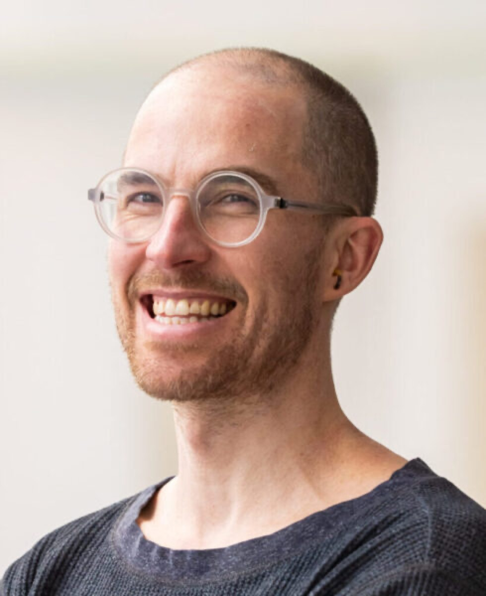
Charles Beasley
New York University
-
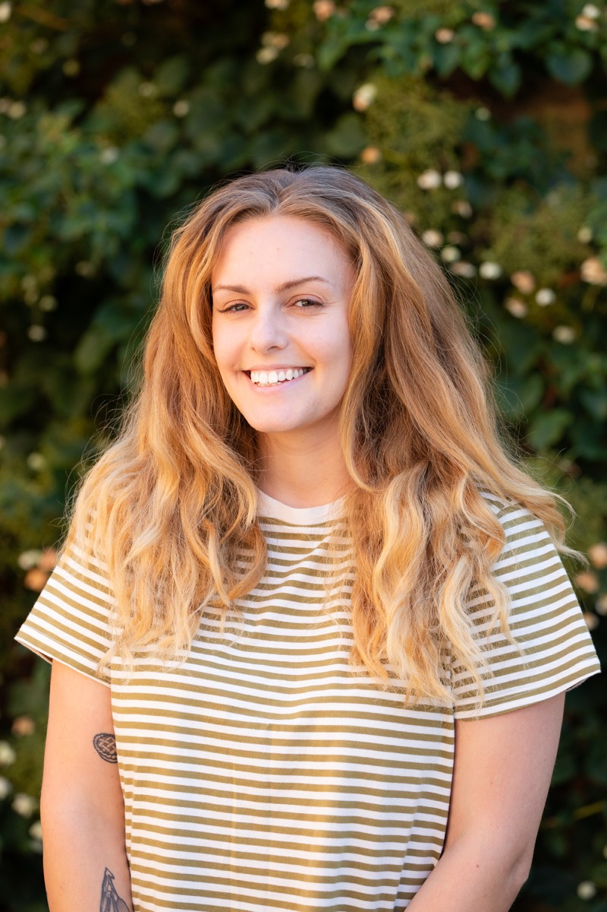
Matilda Gibbons
Rethink Priorities
-
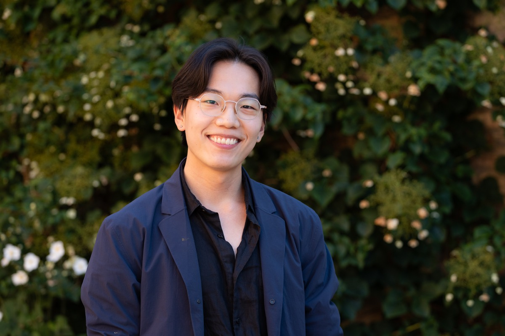
Andy Han
Anthropic Fellow
-
Max Heitmann
Oxford University
-
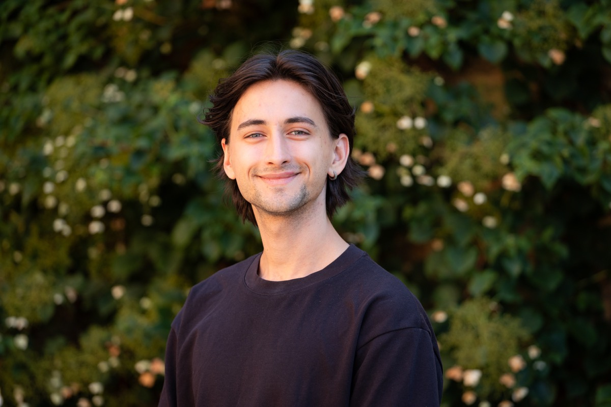
Štěpán Los
New York University
-
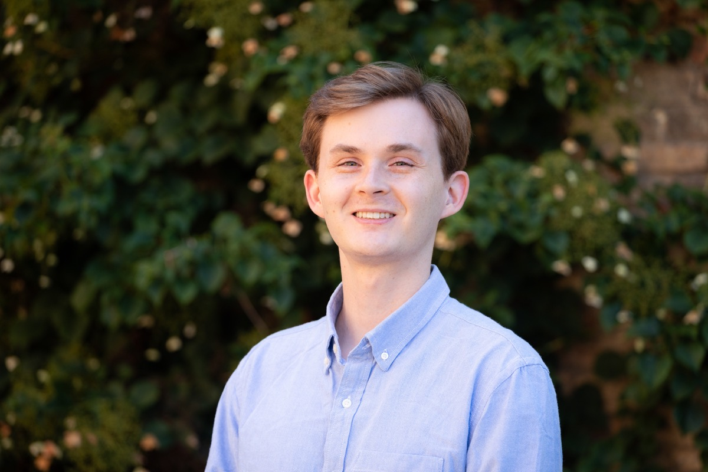
Austin Meek
Independent Researcher
-
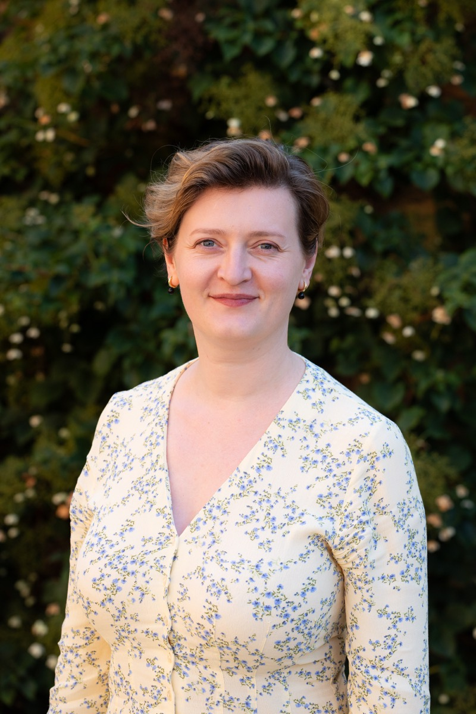
Diana-Mădălina Mocanu
University of Helsinki
-
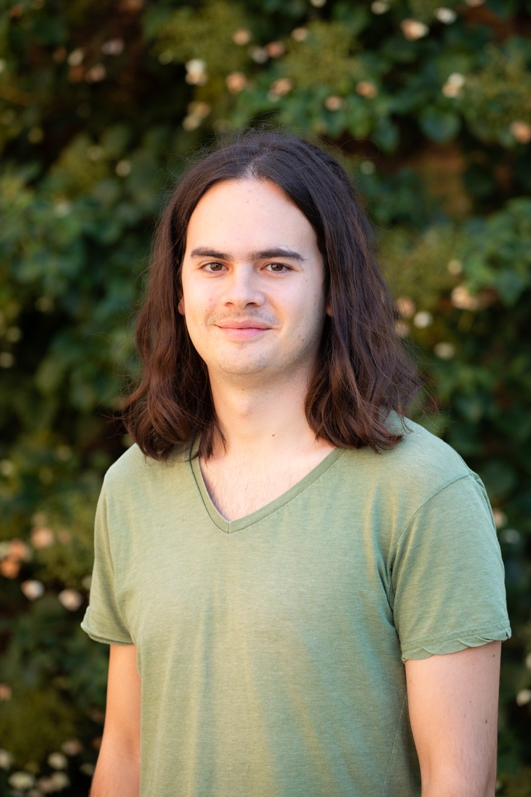
Adrià Moret
New York University
-
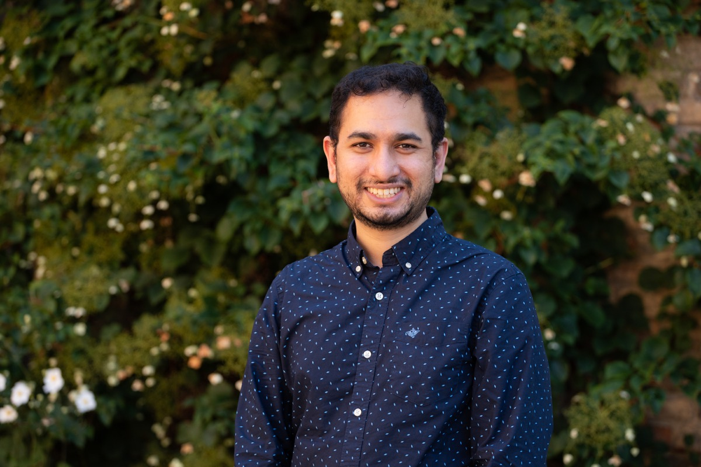
Aashiq Muhamed
Carnegie Mellon University
-
Avi Parrack
Forethought
-
Headshot to follow
Austin Smith
Longview Philanthropy
-
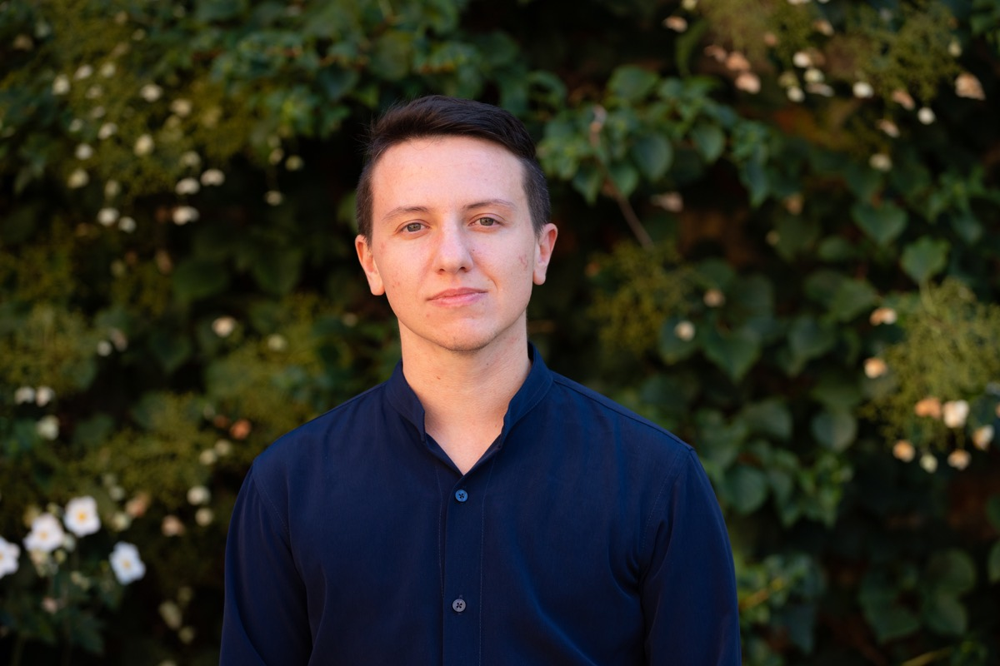
Valen Tagliabue
Future Impact Group
-
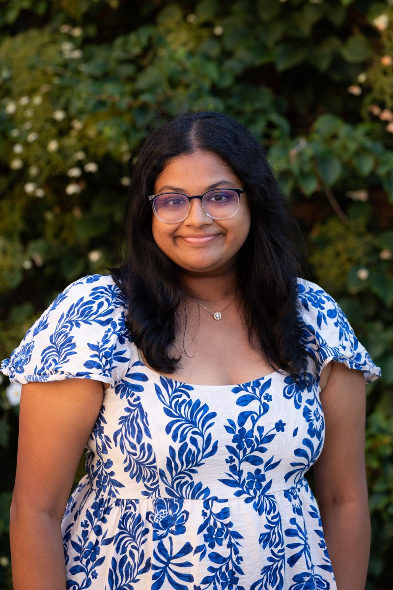
Ria Viswanathan
Cambridge Digital Minds / PRISM
-
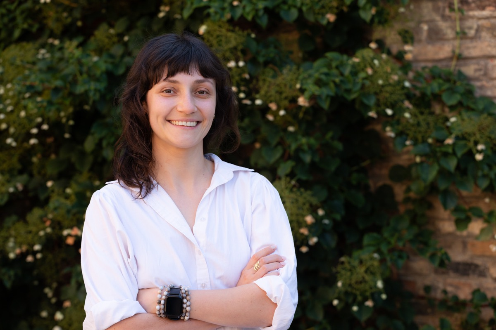
Daria Zakharova
New York University